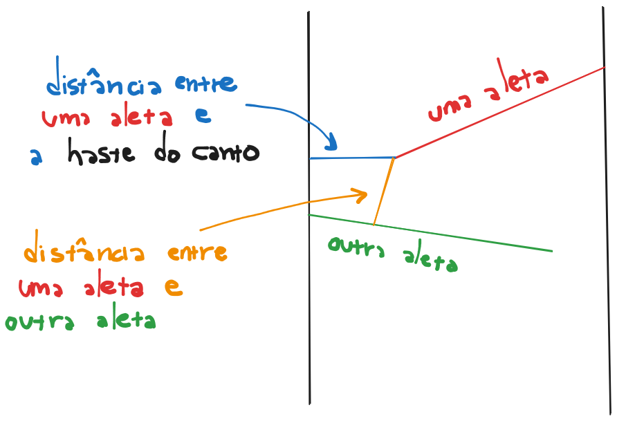

beecrowd 1223 · distância a segmento
Tobogan de Bolinhas
Descobrir o maior diâmetro que atravessa todas as aberturas formadas pelas aletas.
Duas medições por aleta
Cada aleta nasce em uma haste lateral e termina dentro do tobogã. As hastes alternam: esquerda, direita, esquerda, direita. A ponta da aleta cria até dois gargalos.
- Ponta → haste oposta: uma distância horizontal.
- Ponta → próxima aleta: a menor distância entre a ponta atual e o segmento seguinte.
- Resposta: o menor valor entre todos os gargalos, pois a bolinha precisa passar por todos.

Distância ao segmento, não à reta infinita
Projetamos a ponta P sobre a direção do segmento AB. O parâmetro
t indica onde a projeção cairia. Limitá-lo ao intervalo [0, 1]
transforma a reta infinita no segmento real da aleta.
t = ((P-A) · (B-A)) / |B-A|² e Q = A + clamp(t, 0, 1)(B-A)
Três possibilidades: se
t < 0, Q=A; se t > 1, Q=B; caso contrário, Q é o pé da perpendicular dentro da aleta.Varredura dos gargalos
Candidato
Distância atual
Menor até agora
Medição em análise
Uma passada é suficiente
Depois de ler as aletas, visitamos cada uma uma única vez. Calculamos sua abertura até a haste e, quando existir uma próxima aleta, a distância da ponta ao próximo segmento.
TempoO(N)
MemóriaO(N)
Saída2 casas
Projeção limitadaAbrir 1223.py
import math
import sys
def distancia_ponto_segmento(ponto, inicio, fim):
px, py = ponto
ax, ay = inicio
bx, by = fim
vx = bx - ax
vy = by - ay
comprimento_2 = vx * vx + vy * vy
# Uma aleta de comprimento zero é tratada como um ponto.
if comprimento_2 == 0.0:
return math.hypot(px - ax, py - ay)
# t indica onde a projeção cairia na reta da aleta.
t = ((px - ax) * vx + (py - ay) * vy) / comprimento_2
t = max(0.0, min(1.0, t)) # Restringe a projeção ao segmento.
projecao = (ax + t * vx, ay + t * vy)
return math.hypot(px - projecao[0], py - projecao[1])
def menor_abertura(largura, aletas):
resposta = float("inf")
for i, (inicio, ponta) in enumerate(aletas):
parte_da_esquerda = inicio[0] == 0.0
# A ponta pode tocar primeiro a parede oposta.
distancia_ate_haste = (
largura - ponta[0] if parte_da_esquerda else ponta[0]
)
resposta = min(resposta, distancia_ate_haste)
# Ou pode tocar a próxima aleta; medimos ponto contra segmento.
if i + 1 < len(aletas):
resposta = min(
resposta,
distancia_ponto_segmento(ponta, *aletas[i + 1]),
)
return resposta
def main():
dados = iter(sys.stdin.buffer.read().split())
respostas = []
for token in dados:
quantidade = int(token)
largura = float(next(dados))
_altura = float(next(dados)) # A altura não entra na fórmula.
aletas = []
for i in range(quantidade):
y_inicio = float(next(dados))
x_ponta = float(next(dados))
y_ponta = float(next(dados))
x_inicio = 0.0 if i % 2 == 0 else largura
aletas.append(((x_inicio, y_inicio), (x_ponta, y_ponta)))
respostas.append(f"{menor_abertura(largura, aletas):.2f}")
sys.stdout.write("\n".join(respostas) + "\n")
if __name__ == "__main__":
main()Fontes e validação
- Explicação e solução C++ originais — duas distâncias por aleta e mínimo global.
- CGAL Linear Geometry Kernel — pontos, segmentos e distância quadrática entre objetos geométricos.
- Python: math.hypot — norma euclidiana usada após a projeção.